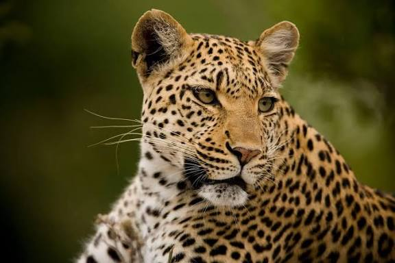

info relevante sobre el leopardo
El leopardo (Panthera pardus) es un mamífero carnívoro de la familia de los félidos y es el más adaptable y distribuido de los grandes felinos del planeta. A diferencia de los leones, es un cazador completamente solitario e independiente que confía en el camuflaje, el sigilo y una fuerza descomunal para sobrevivir en una asombrosa variedad de ecosistemas que van desde selvas y sabanas hasta desiertos y altas montañas.
Son los mejores trepadores entre los grandes felinos. Tienen la increíble capacidad de izar presas que duplican su propio peso hasta las ramas más altas de los árboles. Hacen esto para proteger su comida de depredadores oportunistas o carroñeros como las hienas y los leones.